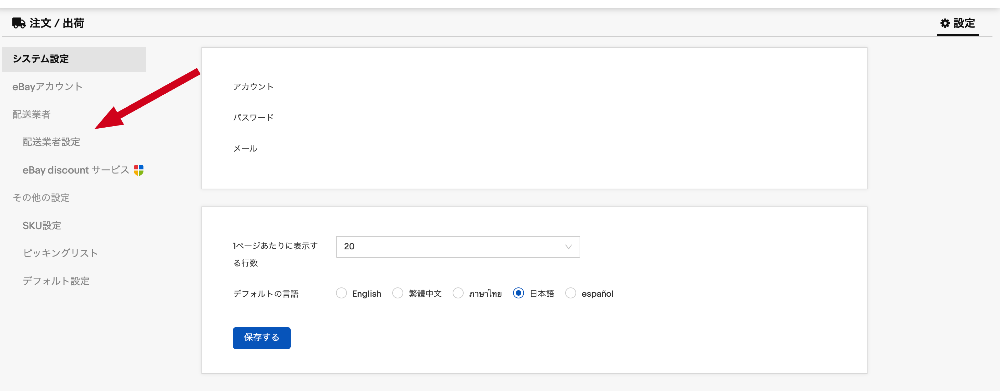
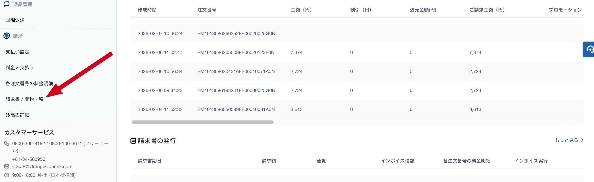
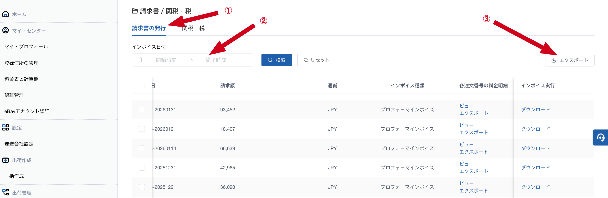
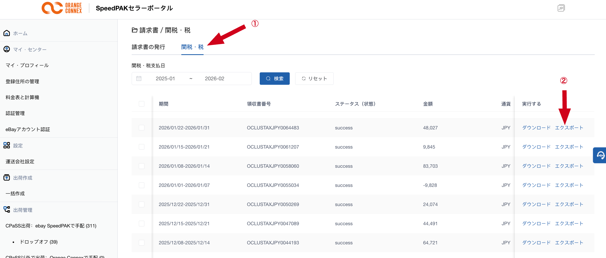

SpeedPAKの配送料金明細（運送料金・燃料割増金など）をExcelでダウンロードする方法です。
CPaSSにログインして、右上の「設定」をクリックすると、左側にパネルが表示されます。その中の「配送業者設定」をクリックします。
セラーポータルへのリンクは2箇所あります。
※②「設定」を選んだ場合は、次の画面で「セラーポータルへ」という青い文字のリンクが表示されるので、そこをクリックしてください。
セラーポータルの左メニューから「請求書/関税・税」を選択します。
①「請求書の発行」タブを選択し、期間を指定して検索します。
表示されたリストの中から、ダウンロードしたい項目にチェックを入れてから、③「エクスポート」ボタンをクリックします。
※②「関税・税」タブについては次のセクションで説明します。
主なカラム：請求書期日 / 請求額 / 通貨 / 注文番号 / 費用タイプ / 税金 / 金額 / 取引時間 / 備考
米国向け発送で発生した関税（DDP）のデータをダウンロードする方法です。
①「関税・税」タブを選択し、②「エクスポート」ボタンでダウンロードできます。
主なカラム：請求期間 / 合計金額 / 通貨 / 注文番号 / 輸送業者 / 料金タイプ / 料金 / 小計 / 取引時間
| 料金タイプ | 説明 |
|---|---|
| 推定米国税 | 発送時に徴収される関税の推定額 |
| 米国関税 | 税関で確定した実際の関税額 |
| 多品目申告 | 複数商品をまとめて申告した場合の手数料 |